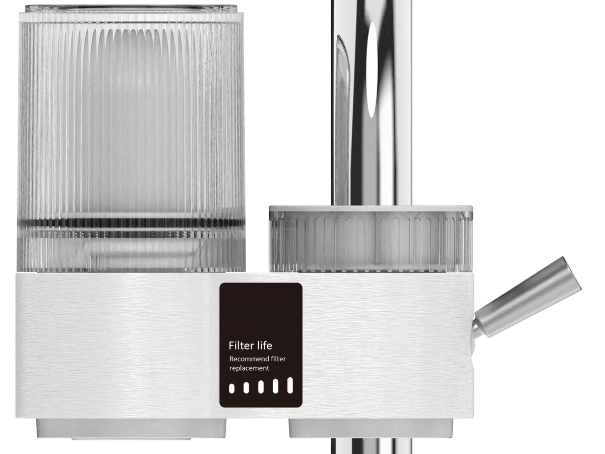

蛇口
蛇口RP-F01
クラシック蛇口フィルター
SKU: RP-F01
MOQ：お問い合わせ時に確認

蛇口フィルター
水栓取付型浄水器（JK-B1）— 一体型と分離型
RP-F10（一体型）とRP-F11（分離型）は同じ水栓取付型浄水器ファミリーの2モデルで、同じフィルターカートリッジを共有します。主な仕様：形式一体型または分離型蛇口フィルター。仕様はモデルと注文ごとに確認します。
取付と仕上げのオプションはご注文ごとに確認済みです。
電圧／周波数は対象国に合わせて設定可能です。その他の構成は注文ごとに確認します。
RP-F10は水栓取付型浄水器（JK-B1）で、一体型と分離型があります。RP-F10（一体型）とRP-F11（分離型）は同じファミリーの2モデルで、同じフィルターカートリッジを共有し、7段階ろ過と両方の原水／ろ過水切替を備えます。RP-F10はダークブルーまたはグリーンカバー付きです。グリーンカバーは同じフィルターのカバーオプションで、ダークブルーバージョンと同じ仕様です。カートリッジオプション、定格流量と容量、ろ過精度、圧力と温度、カートリッジ寿命と寸法はご注文ごとに確認済みです。
最小注文数量はいくつですか？
初回注文はモデルあたり200台、再注文は500台です。
大口注文の前にサンプルを注文できますか？
はい。サンプルは15日でご用意できます。サンプル費用は初回大口注文時に返金されます。大口注文はサンプル承認後40日で出荷し、FOB深圳条件となります。
どのバリアントを選ぶべきですか？
RP-F10として見積もり、カバーを指定してください（ダークブルーまたはグリーン）。RP-F11は同じフィルターカートリッジの分離型で、別途ダイバーター付きです。
RP-F10のカバー色は2色 — RP-F10として見積もり、カバーを指定してください（ダークブルーまたはグリーン）。RP-F11は分離型です。
バリアント画像にホバーすると仕様が表示されます。タッチ画面では画像をタップしてください。


各バリエーションのフルスペックを並べて表示。下の仕様表はRP-F10の値です。
| 仕様 | RP-F10-1 — ダークブルーカバー（JK-B1） | RP-F10-2 — グリーンカバー（JK-B2） | RP-F10-3 — 分離型（JK-A1） |
|---|---|---|---|
| 形式 | 一体型蛇口フィルター | 一体型蛇口フィルター | 分離型蛇口フィルター |
| カートリッジオプション | ご注文ごとに確認済みです | ご注文ごとに確認済みです | ご注文ごとに確認済みです |
| 出口 | 原水／ろ過水切替 | 原水／ろ過水切替 | 原水／ろ過水切替 |
| 定格流量／容量 | ご注文ごとに確認済みです | ご注文ごとに確認済みです | ご注文ごとに確認済みです |
| ろ過精度 | ご注文ごとに確認済みです | ご注文ごとに確認済みです | ご注文ごとに確認済みです |
| 圧力／温度 | ご注文ごとに確認済みです | ご注文ごとに確認済みです | ご注文ごとに確認済みです |
| カートリッジ寿命／寸法 | ご注文ごとに確認済みです | ご注文ごとに確認済みです | ご注文ごとに確認済みです |
| ろ過 | 7段ろ過 | 7段ろ過 | 7段ろ過 |
| カバー | ダークブルー | グリーン | — |
ROPureOEMカタログの仕様 7 行。
| 形式 | 一体型蛇口フィルター |
|---|---|
| カートリッジオプション | ご注文ごとに確認済みです |
| 出口 | 原水／ろ過水切替 |
| 定格流量／容量 | ご注文ごとに確認済みです |
| ろ過精度 | ご注文ごとに確認済みです |
| 圧力／温度 | ご注文ごとに確認済みです |
| カートリッジ寿命／寸法 | ご注文ごとに確認済みです |
仕様はROPureOEMカタログに基づいています。値がまだ確認されていない場合は「注文ごとに確認」と記載しています。未確認の数値は公表しません。
蛇口クラシック蛇口フィルター
SKU: RP-F01
MOQ：お問い合わせ時に確認
 蛇口
蛇口360°回転式蛇口フィルター
SKU: RP-F02
MOQ：お問い合わせ時に確認
 蛇口
蛇口カーボンファイバー蛇口フィルター
SKU: RP-F06
MOQ：お問い合わせ時に確認

蛇口フィルター寿命表示付き蛇口フィルター
SKU: RP-F08
MOQ：お問い合わせ時に確認